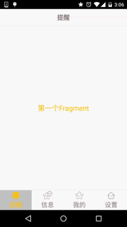
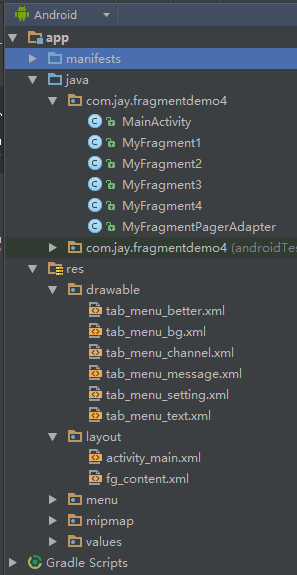

一、本节引言：
前三节我们分别用不同的方式实现了普通底部导航栏的效果，而本节我们将会在第二个实例的基础上 加上ViewPager来实现滑动切换页面的效果！大部分朋友都知道这个ViewPager是什么东西吧，如果 不知道没关系，下面我们简单的来介绍一个这个控件！
二、ViewPager简单介绍
1）是怎么样的一个控件？
答：一个页面切换的组件，我们可以往里面填充多个View，然后我们可以通过触摸屏幕左右滑动 切换不同的View，和前面学习的ListView一样，我们需要一个Adapter(适配器)，将要显示的View和 我们的ViewPager进行绑定，而ViewPager有他自己特定的Adapter——PagerAdapter！另外，Google 官方是建议我们使用Fragment来填充ViewPager的,这样可以更加方便的生成每个Page以及管理 每个Page的生命周期!当然它给我们提供了两个不同的Adapter，他们分别是： FragmentPageAdapter和FragmentStatePagerAdapter！ 而我们本节用到的则是前者：FragmentPageAdapter！ 另外要说一点的是ViewPager的缓存机制： ViewPager会缓存当前页，前一页，以及后一页，比如有1，2，3，4这四个页面： 当我们处于第一页：缓存1，2 ——> 处于第二页：缓存 1，2，3 ——> 处于第三页：缓存2，3，4 ——> 处于第四页缓存3，4这样！
2）使用PagerAdapter要重写相关方法：
- getCount( ):获得viewpager中有多少个view
- destroyItem( ):移除一个给定位置的页面。适配器有责任从容器中删除这个视图。这是为了确保 在finishUpdate(viewGroup)返回时视图能够被移除。
- instantiateItem( ):①将给定位置的view添加到ViewGroup(容器)中,创建并显示出来 ②返回一个代表新增页面的Object(key),通常都是直接返回view本身就可以了, 当然你也可以自定义自己的key,但是key和每个view要一一对应的关系
- isViewFromObject( ):判断instantiateItem(ViewGroup, int)函数所返回来的Key与一个页面视图是否是 代表的同一个视图(即它俩是否是对应的，对应的表示同一个View),通常我们直接写 return view == object；就可以了,至于为什么要这样讲起来比较复杂,后面有机会进行了解吧 貌似是ViewPager中有个存储view状态信息的ArrayList,根据View取出对应信息的吧!
PS:不一定要重写所有方法~
三、实现效果图以及工程目录结构：
先来看下我们要实现的效果吧

接下来看下我们的项目结构：

四、代码实现：
Step 1：相关资源文件的准备：
PS：我们是在实现底部导航栏方法2的基础上来写的，所以资源文件照搬即可！ 这里就不贴多次了~！
Step 2：编写activity_main.xml的布局文件：
PS：只是把前面的FrameLayout替换成了：android.support.v4.view.ViewPager而已：
activity_mian.xml：
<RelativeLayout xmlns:android="http://schemas.android.com/apk/res/android"
xmlns:tools="http://schemas.android.com/tools"
android:layout_width="match_parent"
android:layout_height="match_parent"
tools:context=".MainActivity">
<RelativeLayout
android:id="@+id/ly_top_bar"
android:layout_width="match_parent"
android:layout_height="48dp"
android:background="@color/bg_topbar">
<TextView
android:id="@+id/txt_topbar"
android:layout_width="match_parent"
android:layout_height="match_parent"
android:layout_centerInParent="true"
android:gravity="center"
android:text="提醒"
android:textColor="@color/text_topbar"
android:textSize="18sp" />
<View
android:layout_width="match_parent"
android:layout_height="2px"
android:layout_alignParentBottom="true"
android:background="@color/div_white" />
</RelativeLayout>
<RadioGroup
android:id="@+id/rg_tab_bar"
android:layout_width="match_parent"
android:layout_height="56dp"
android:layout_alignParentBottom="true"
android:background="@color/bg_white"
android:orientation="horizontal">
<RadioButton
android:id="@+id/rb_channel"
style="@style/tab_menu_item"
android:drawableTop="@drawable/tab_menu_channel"
android:text="@string/tab_menu_alert" />
<RadioButton
android:id="@+id/rb_message"
style="@style/tab_menu_item"
android:drawableTop="@drawable/tab_menu_message"
android:text="@string/tab_menu_profile" />
<RadioButton
android:id="@+id/rb_better"
style="@style/tab_menu_item"
android:drawableTop="@drawable/tab_menu_better"
android:text="@string/tab_menu_pay" />
<RadioButton
android:id="@+id/rb_setting"
style="@style/tab_menu_item"
android:drawableTop="@drawable/tab_menu_setting"
android:text="@string/tab_menu_setting" />
</RadioGroup>
<View
android:id="@+id/div_tab_bar"
android:layout_width="match_parent"
android:layout_height="2px"
android:layout_above="@id/rg_tab_bar"
android:background="@color/div_white" />
<android.support.v4.view.ViewPager
android:id="@+id/vpager"
android:layout_width="match_parent"
android:layout_height="match_parent"
android:layout_above="@id/div_tab_bar"
android:layout_below="@id/ly_top_bar" />
</RelativeLayout>
Step 3：编写Fragment的布局以及代码：
PS：这里为了顺便演示ViewPager的机制，特意写成了四个Fragment！在onCreateView中打印创建Log！
fg_content.xml:
<?xml version="1.0" encoding="utf-8"?>
<LinearLayout xmlns:android="http://schemas.android.com/apk/res/android"
android:layout_width="match_parent"
android:layout_height="match_parent"
android:background="@color/bg_white"
android:orientation="vertical">
<TextView
android:id="@+id/txt_content"
android:layout_width="match_parent"
android:layout_height="match_parent"
android:gravity="center"
android:text="呵呵"
android:textColor="@color/text_yellow"
android:textSize="20sp" />
</LinearLayout>
MyFragment1.java:
/**
* Created by Jay on 2015/8/28 0028.
*/
public class MyFragment1 extends Fragment {
public MyFragment1() {
}
@Override
public View onCreateView(LayoutInflater inflater, ViewGroup container, Bundle savedInstanceState) {
View view = inflater.inflate(R.layout.fg_content, container, false);
TextView txt_content = (TextView) view.findViewById(R.id.txt_content);
txt_content.setText("第一个Fragment");
Log.e("HEHE", "1日狗");
return view;
}
}
其他三个照葫芦画瓢，换点东西就好！
Step 4：自定义FragmentPagerAdapter类：
代码很简单，只需传递一个FragmentManager过来，其他都在这里完成！
/**
* Created by Jay on 2015/8/31 0031.
*/
public class MyFragmentPagerAdapter extends FragmentPagerAdapter {
private final int PAGER_COUNT = 4;
private MyFragment1 myFragment1 = null;
private MyFragment2 myFragment2 = null;
private MyFragment3 myFragment3 = null;
private MyFragment4 myFragment4 = null;
public MyFragmentPagerAdapter(FragmentManager fm) {
super(fm);
myFragment1 = new MyFragment1();
myFragment2 = new MyFragment2();
myFragment3 = new MyFragment3();
myFragment4 = new MyFragment4();
}
@Override
public int getCount() {
return PAGER_COUNT;
}
@Override
public Object instantiateItem(ViewGroup vg, int position) {
return super.instantiateItem(vg, position);
}
@Override
public void destroyItem(ViewGroup container, int position, Object object) {
System.out.println("position Destory" + position);
super.destroyItem(container, position, object);
}
@Override
public Fragment getItem(int position) {
Fragment fragment = null;
switch (position) {
case MainActivity.PAGE_ONE:
fragment = myFragment1;
break;
case MainActivity.PAGE_TWO:
fragment = myFragment2;
break;
case MainActivity.PAGE_THREE:
fragment = myFragment3;
break;
case MainActivity.PAGE_FOUR:
fragment = myFragment4;
break;
}
return fragment;
}
}
Step 5：MainActivity的编写：
逻辑很简单，自己看~
MainActivity.java:
package com.jay.fragmentdemo4;
import android.os.Bundle;
import android.support.v4.view.ViewPager;
import android.support.v7.app.AppCompatActivity;
import android.widget.RadioButton;
import android.widget.RadioGroup;
import android.widget.TextView;
/**
* Created by Coder-pig on 2015/8/28 0028.
*/
public class MainActivity extends AppCompatActivity implements RadioGroup.OnCheckedChangeListener,
ViewPager.OnPageChangeListener {
//UI Objects
private TextView txt_topbar;
private RadioGroup rg_tab_bar;
private RadioButton rb_channel;
private RadioButton rb_message;
private RadioButton rb_better;
private RadioButton rb_setting;
private ViewPager vpager;
private MyFragmentPagerAdapter mAdapter;
//几个代表页面的常量
public static final int PAGE_ONE = 0;
public static final int PAGE_TWO = 1;
public static final int PAGE_THREE = 2;
public static final int PAGE_FOUR = 3;
@Override
protected void onCreate(Bundle savedInstanceState) {
super.onCreate(savedInstanceState);
setContentView(R.layout.activity_main);
mAdapter = new MyFragmentPagerAdapter(getSupportFragmentManager());
bindViews();
rb_channel.setChecked(true);
}
private void bindViews() {
txt_topbar = (TextView) findViewById(R.id.txt_topbar);
rg_tab_bar = (RadioGroup) findViewById(R.id.rg_tab_bar);
rb_channel = (RadioButton) findViewById(R.id.rb_channel);
rb_message = (RadioButton) findViewById(R.id.rb_message);
rb_better = (RadioButton) findViewById(R.id.rb_better);
rb_setting = (RadioButton) findViewById(R.id.rb_setting);
rg_tab_bar.setOnCheckedChangeListener(this);
vpager = (ViewPager) findViewById(R.id.vpager);
vpager.setAdapter(mAdapter);
vpager.setCurrentItem(0);
vpager.addOnPageChangeListener(this);
}
@Override
public void onCheckedChanged(RadioGroup group, int checkedId) {
switch (checkedId) {
case R.id.rb_channel:
vpager.setCurrentItem(PAGE_ONE);
break;
case R.id.rb_message:
vpager.setCurrentItem(PAGE_TWO);
break;
case R.id.rb_better:
vpager.setCurrentItem(PAGE_THREE);
break;
case R.id.rb_setting:
vpager.setCurrentItem(PAGE_FOUR);
break;
}
}
//重写ViewPager页面切换的处理方法
@Override
public void onPageScrolled(int position, float positionOffset, int positionOffsetPixels) {
}
@Override
public void onPageSelected(int position) {
}
@Override
public void onPageScrollStateChanged(int state) {
//state的状态有三个，0表示什么都没做，1正在滑动，2滑动完毕
if (state == 2) {
switch (vpager.getCurrentItem()) {
case PAGE_ONE:
rb_channel.setChecked(true);
break;
case PAGE_TWO:
rb_message.setChecked(true);
break;
case PAGE_THREE:
rb_better.setChecked(true);
break;
case PAGE_FOUR:
rb_setting.setChecked(true);
break;
}
}
}
}
PS：嘿嘿，上面我把导包部分的代码也贴出来了，就是害怕你们导错包，然后出现一些莫名其妙的错误！ 因为ViewPager是v4包下面的，所以Fragment，FragmentManager，FragmentTransaction都是需要使用 V4包下的哦！另外获取FragmentManager的方法不是直接用getFragmentManager()而是使用 getSupportFragmentManager(）哦！
注意：如果 ViewPager 放在 RadioButton 后，RadioButton 的点击事件会失效。
五、代码下载：
FragmentDemo4：下载FragmentDemo4.zip
六、本节小结：
好的，上面就是底部导航栏 + ViewPager实现简单滑动切换Fragment的实现过程了！ 就说这么多，谢谢~